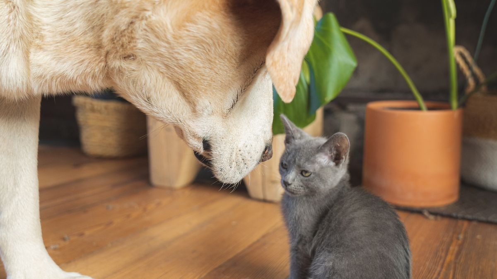

첫 외출 후 달라진 하루
입양 2주 차, 처음으로 3시간 외출했다가 돌아온 날 밤중 울음이 이어진 소형견을 봤습니다. 그 전까지는 현관 문을 열어도 크게 반응하지 않았는데, 그날은 집 안을 돌며 하울링을 반복했습니다. 메모를 보니 외출 전날 산책 시간이 40분 늘고, 급여 시간이 1시간 밀려 있었습니다.

이 글은 분리 불안을 진단하거나 치료법을 제시하지 않습니다. 다만 짧은 외출을 미리 연습하고, 돌아온 뒤 관찰하는 습관이 갑작스러운 변화를 줄이는 데 도움이 되는 경우가 많다는 점을 정리합니다.
왜 미리 연습할까
반려동물에게 '혼자 있는 시간'은 낯선 일입니다. 사람이 매일 나갔다 오는 패턴도 처음 2~4주는 예측이 어렵습니다. 갑자기 4시간 외출부터 시작하면, 문 닫는 소리·차 소리·조용해진 집이 한꺼번에 겹칩니다.
연습의 목표는 '오래 버티기'가 아니라 문 닫힘→조용함→다시 열림이 반복되는 경험을 쌓는 것입니다. 성공 기준은 울지 않는 것이 아니라, 돌아왔을 때 식욕·배변·수면이 평소와 비슷한지입니다.
단계별 연습 예시
- 1~3일: 현관 문 앞에서 2분. 반려동물은 안방·거실 중 한 곳, 물그릇·휴식 매트는 그대로. 문만 닫고 복도에서 대기.
- 4~7일: 5분. 엘리베이터 1층까지 내려갔다 올라오기만 해도 됩니다. 돌아올 때 인사는 10초, 과한 포옹은 자제.
- 2주 차: 15분. 편의점 왕복 수준. 돌아온 뒤 5분은 조용히, 바로 산책·놀이로 이어지지 않기.
- 3주 이후: 30분. 반응이 안정되면 10분씩만 늘립니다. 하루에 두 번 늘리지 않습니다.
한 단계에서 짖음·하울링·배변 사고가 2일 연속이면 이전 단계로 돌아갑니다. '실패'가 아니라 '지금 단계가 길다'는 신호로 보는 편이 낫습니다.
고양이는 문 시야가 없는 별도 방이 더 편한 경우가 많습니다. 개는 휴식 매트가 보이는 거실, 고양이는 화장실·캣타워가 있는 방처럼 개체별로 '혼자 있을 방'을 고정하세요.
현장에서
외출 연습은 퇴근 루틴과 섞지 않는 편이 낫습니다. '진짜 외출'과 '연습'이 같은 문·같은 가방을 쓰면 구분이 어려워집니다. 연습 때는 가방을 들지 않거나, 다른 신발만 신는 식으로 작은 차이를 두세요.

돌아온 직후 5분은 조용히 합니다. 반가움 포옹·간식·산책을 바로 이어 붙이면 '문 열림=최고의 자극'으로 고정될 수 있습니다. 물그릇 확인·짧은 인사 정도면 충분합니다.
연습 일지는 날짜·분·반응(조용/짖음/배변 사고) 3가지만 적으세요. 7일이 쌓이면 '몇 분까지 괜찮은지'가 보입니다.
가족이 돌보면 '오늘 누가 연습했는지' 한 줄을 남기세요. 같은 날 두 번 15분을 겹치면 오히려 혼란이 커질 수 있습니다.
배경 소음(TV·라디오)을 낮게 틀어 두는 집도 있습니다. 완전 무음이 부담인 개체에게는 30% 볼륨의 흰 소음이 도움이 되기도 합니다. 반려동물이 소리에 민감하면 무음부터 시작하세요.
창문·베란다 잠금, 전선·쓰레기통 위치는 연습 전에 1분만 다시 봅니다. 혼자 있는 시간이 길어질수록 사고 위험도 함께 늘어납니다.
이번 주 혼자 있는 시간 연습 체크리스트입니다. 분 수보다 '같은 순서'가 우선입니다.
- 연습 전용 시간을 평일 외출과 분리했습니다.
- 현관 문 2분→5분→15분 순서를 지켰습니다.
- 돌아온 뒤 5분은 조용히, 바로 산책·간식을 붙이지 않았습니다.
- 날짜·분·반응을 7일간 메모했습니다.
- 물그릇·휴식 매트 위치를 외출 전후 동일하게 유지했습니다.
- 2일 연속 짖음·사고 시 이전 단계로 돌아갔습니다.
- 창문·전선·쓰레기통을 연습 전 1분 점검했습니다.
연습은 '오래 버티기' 경쟁이 아닙니다. 돌아왔을 때 식욕·배변·수면이 평소와 비슷하면 그 단계는 충분한 경우가 많습니다.
입양 4주가 지나도 30분이 불안하면 15분을 2주 더 유지하세요. 숫자보다 메모가 우선입니다.
외출 전 3분 체크
①물그릇·휴식 매트 위치가 평소와 같은지 ②화장실·배변 패드가 비어 있는지 ③창문·발코니 잠금 ④전선·쓰레기통·작은 물건 ⑤가족에게 '몇 분 연습인지' 한 줄 공유. 급하게 나가기 직전 1분 점검만 해도 사고·불안이 줄어드는 경우가 있습니다.
산책·격한 놀이를 외출 직전에 하면 흥분이 남을 수 있습니다. 가능하면 20분 전에 마무리하고, 외출 전에는 짧은 배변 확인만 합니다.
돌아온 뒤 관찰
문을 연 뒤 10분 안에 식욕·배변·호흡·수면 자세를 봅니다. 평소와 같으면 오늘 연습은 성공으로 기록하세요. 짖음이 있었어도 10분 후 조용해지고 식욕이 유지되면 '지금 단계 유지'를 검토할 수 있습니다.
배변 사고·물그릇 뒤집힘·문지·가구 긁음이 있으면 시간을 반으로 줄이고, 원인(소음·시야·직전 놀이)을 한 줄 메모합니다. 48시간 같은 패턴이면 메모를 들고 상담을 검토하세요.
밤중 울음이 늘었는지는 다음 날 아침에 확인합니다. 전날 연습 분 수와 함께 적어 두면 패턴 파악에 도움이 됩니다.
적용 전에
처음 외출을 4시간으로 잡는 집을 봅니다. 연습 없이 '버틸 수 있겠지'가 가장 흔한 출발점입니다.
적용 전에 이번 주 목표를 5분으로만 정해 보세요. 돌아온 뒤 메모 3줄이 있으면 다음 주가 쉬워집니다.
이 글은 치료를 대체하지 않습니다. 반복되는 파손·자해·식욕 급감 등은 전문 상담을 검토하세요.
초보자가 자주 실수하는 포인트
- 입양 직후 3~4시간 외출부터 시작
- 돌아오자마자 산책·간식·포옹으로 보상
- 연습과 실제 퇴근을 같은 패턴으로 섞음
- 짖음 후에도 같은 분 수를 3일 연속 반복
- 돌아온 뒤 관찰 없이 '괜찮았겠지'로 넘김
체크리스트
- 연습 전용 시간 따로 정하기
- 2분→5분→15분 단계 지키기
- 돌아온 뒤 5분 조용히
- 날짜·분·반응 7일 메모
- 2일 연속 이상 시 이전 단계로
자주 묻는 질문
- 몇 시간까지 혼자 둬도 되나요?
- 개체·연령·건강 상태마다 다릅니다. 단계 연습으로 '몇 분까지 평소와 비슷한지'를 먼저 파악하고, 필요하면 메모를 들고 상담을 검토하세요.
- 짖어도 다음 단계로 넘어가도 될까요?
- 짖음이 2일 연속이거나 배변 사고·식욕 변화가 함께 있으면 이전 단계로 돌아가세요. 하루만 짖고 10분 후 조용해지면 같은 단계를 유지해 볼 수 있습니다.
- 고양이도 같은 방식으로 연습하나요?
- 원리는 비슷합니다. 다만 고양이는 시야가 닿는 현관보다 화장실·캣타워가 있는 별도 방이 편한 경우가 많습니다. 2분부터 같은 순서로 반복하세요.
이 글은 초보자 기준으로 이해하기 쉽게 정리되었으며, 내용은 운영 과정에서 순차적으로 보완될 수 있습니다. 수의사 등 전문가의 진단·처치를 대체하지 않습니다.